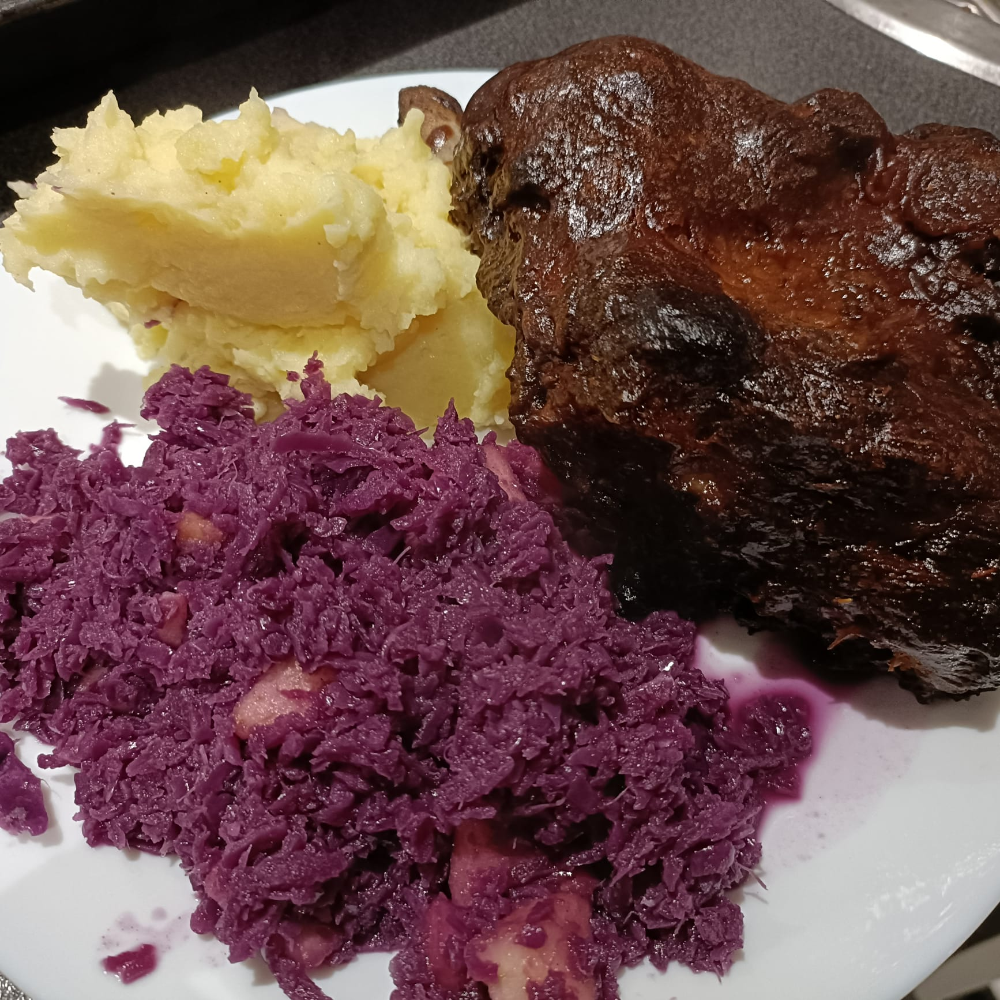

Favorite Dishes
 |
Gevulde SpeculaasA traditional Dutch spiced pastry with almond filling, perfect for festive occasions. |
 |
Homemade ConesCrispy, golden cones made from scratch for your favorite ice cream flavors. |
 |
Homemade Kebab and PitaDelicious homemade kebab served with fresh pita and a touch of garlic sauce. |
 |
KanelbullarSwedish cinnamon buns, soft and fragrant, perfect with a cup of coffee. |
 |
Healthier Mac and CheeseA lighter twist on the classic mac and cheese, still creamy and comforting. |
 |
PatrchCheck what this dish is—possibly a placeholder or a recipe name that needs updating. |
 |
Pulled VildsvinTender pulled wild boar, slow-cooked and full of flavor. |
 |
TiramisuThe classic Italian dessert with coffee-soaked ladyfingers and mascarpone cream. |
 |
Vanilje Kvarg PankakorSwedish vanilla quark pancakes, soft and light, a healthy treat for breakfast or dessert. |
|  |
Vildsvin Rib with Red Cabbage and Mashed PotatoesJuicy wild boar ribs served with red cabbage and creamy mashed potatoes, a hearty Scandinavian meal. |